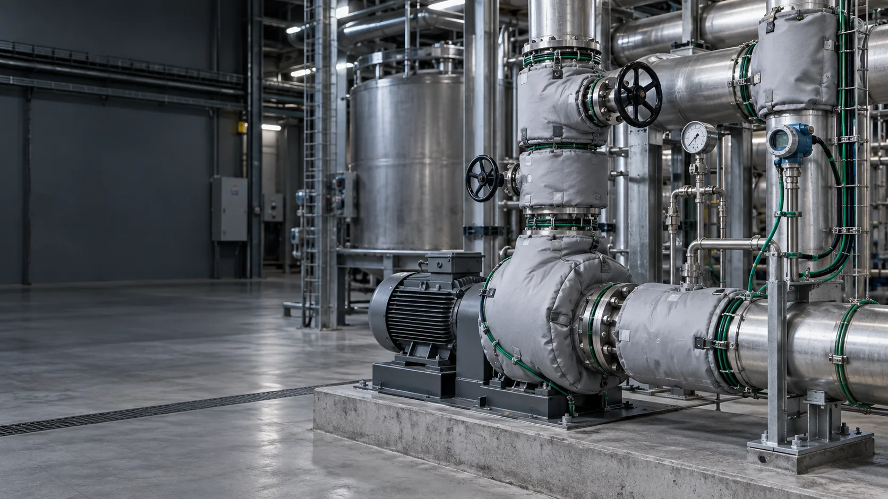
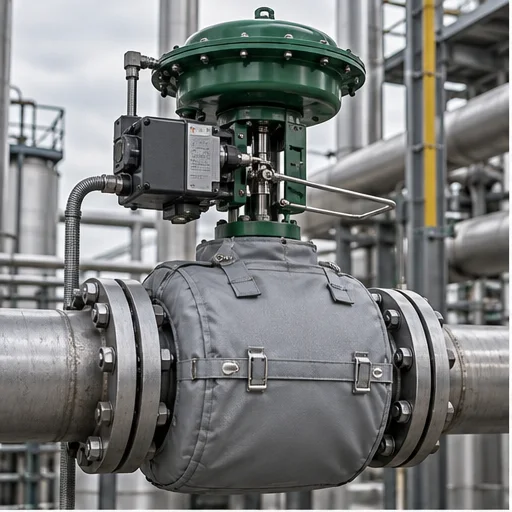
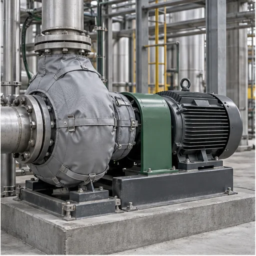
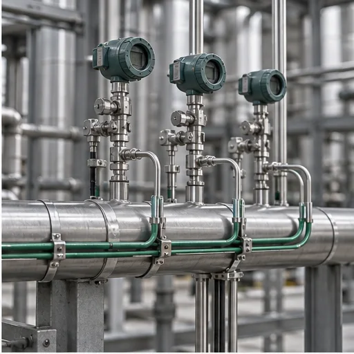
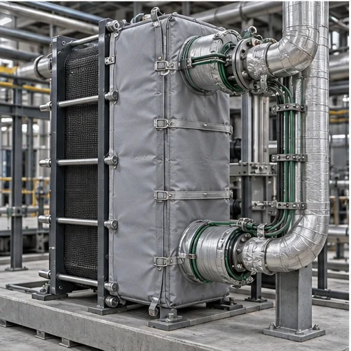
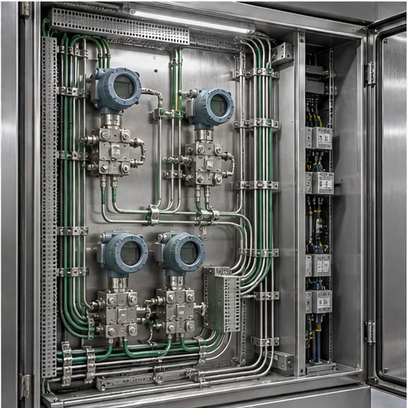
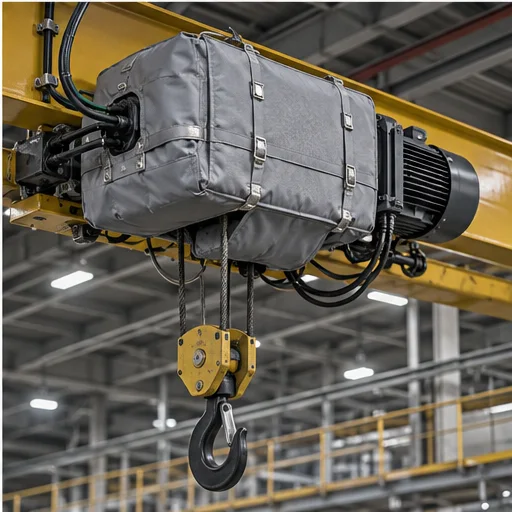
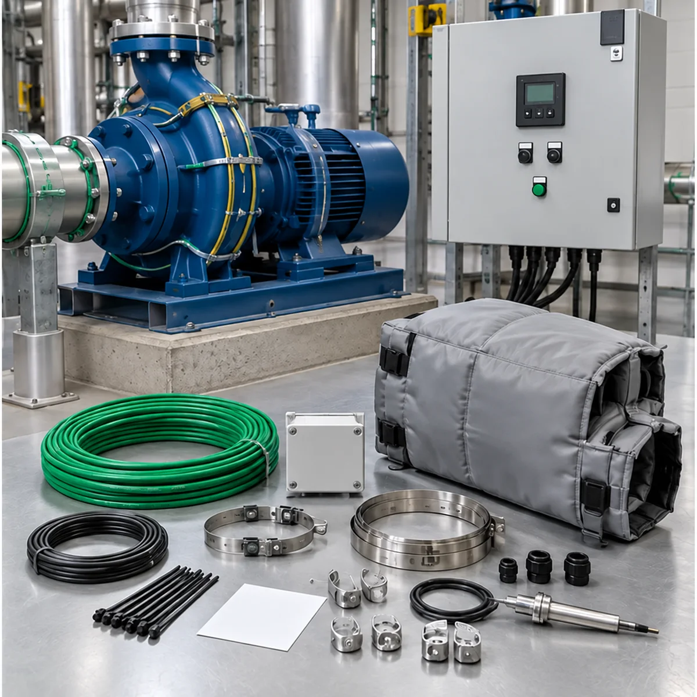

Замерзание среды
Предотвращаем ледяные пробки, заклинивание арматуры и риск разрыва трубопровода.

Инженерные системы под ключ
Защищаем арматуру, насосы, теплообменники, КИПиА и нестандартные технологические узлы от замерзания, загустения продукта, конденсата и коррозии.
Технологические узлы охлаждаются неравномерно. Особенно уязвимы арматура, фланцы, насосы и импульсные линии, где поток замедляется или останавливается.
Предотвращаем ледяные пробки, заклинивание арматуры и риск разрыва трубопровода.
Поддерживаем текучесть нефтепродуктов, мазута и химических жидкостей.
Снижаем риск осадка, сужения проходного сечения и остановки линии.
Защищаем газовые узлы от ледяных и гидратных пробок при падении температуры.
Сохраняем оборудование и уменьшаем воздействие влаги на металл.
Система проектируется под геометрию, материал, режим работы и реальные условия эксплуатации конкретного оборудования.

Задвижки, вентили, клапаны, шаровые краны, затворы, фильтры и соединения.

Центробежные насосы и комбинации «задвижка — фильтр — клапан».

Небольшие участки трубопроводов, технологические и импульсные линии.

Пластинчатое и кожухотрубчатое теплообменное оборудование.

Контрольно-измерительные приборы, датчики и элементы тепловой автоматики.

Маслоохладители, газовыпускные системы, корпуса горелок, тельферы и специальные узлы.

Комплексное решение
Рассчитываем теплопотери и комплектуем систему так, чтобы она поддерживала заданную температуру, предотвращала замерзание и не расходовала лишнюю электроэнергию.
Техническая ответственность за систему целиком.
Официальное представительство, оригинальный кабель и гарантия производителя до 10 лет.
Мощность и длина секции определяются по теплопотерям объекта.
«Корда-ЧСТЭ» по ТУ и индивидуальным чертежам.
Расчёт, кабель, автоматика, изоляция, монтаж и поддержка.
От исходных данных до работающей системы и исполнительной документации.
Тип оборудования, температуры, среда и питание.
Чертежи, замеры, выезд и 3D-сканирование.
Мощность, длина кабеля, изоляция и температурный класс.
Кабель, регуляторы, комплектующие и автоматика.
Расчёт, спецификация, цена и тестовый образец.
Поставка со склада и производство термочехлов.
Организуем поставку оборудования на объект.
Монтаж KORDA или шеф-монтаж подрядчика.
Исполнительная документация, сертификаты и паспорта.
Гарантийный сервис, ремонт и консультации.
Серия выбирается по требуемой температуре, мощности, среде и режиму эксплуатации.
Защита от замерзания и поддержание температуры.
Промышленное применение и среднетемпературные задачи.
Экранированный кабель для сложных условий эксплуатации.
Высокотемпературные технологические процессы.
Надёжность зависит не только от мощности кабеля, но и от всей системы.
Защита от замерзания или поддержание технологической температуры.
Материал, геометрия и количество теплоотводящих элементов.
Материал, толщина и качество монтажа.
Минимальная температура, влажность, химия и УФ.
Рабочая и максимальная допустимая температура.
Термостат, датчик и точность регулирования.
220/380 В, нагрузка и пусковой ток.
Решения для низких температур и химически агрессивных условий.
Термочехол для пропановой фракции при температуре до −55 °C.
Монтаж — 3 минуты.
«Корда ЧСТЭ-200» для защиты воды при температуре до −60 °C.
Монтаж — 3 минуты.
Комплект термочехлов с двумя контурами греющего кабеля.
Повторный заказ на 6 скважин.
Термочехлы для агрессивной среды и низких температур.
Монтаж — 10 минут.
Чехол с кабелем и влагозащищённым регулятором при −45 °C.
Монтаж — 20–30 минут.
Подогрев мазута до +50 °C при отрицательной температуре.
Монтаж — 2 минуты.
Получить инженерный расчёт
Для старта нужны тип и размеры оборудования, температуры, теплоизоляция, среда, условия эксплуатации и электропитание. Можно приложить чертёж или эскиз.